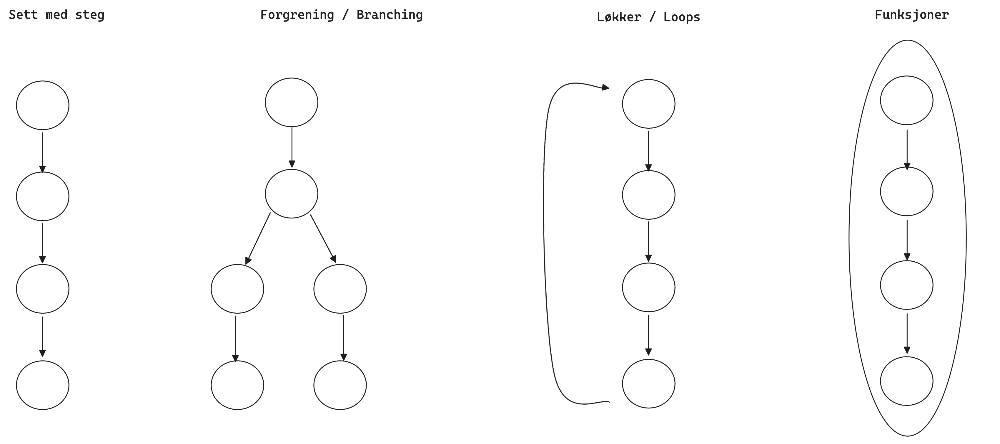

Day 8
Data Types
Primitive
In JavaScript, a primitive (primitive value, primitive data type) is data that is not anobject and has no method or properties. There are 7 primitive data types.
- String - "double quote" & 'single quote' are string literals , `backticks` for template literals
- Number - a numeric data type in the double-precision 64-bit floating point format (IEEE 754)
- BigInt - a numeric data type that can represent integers in the arbitrary precision format
- Boolean -True (1) False (0)
- Undefined - a primitive value automatically assigned to variables that have just been declared, or to formal arguments for which there are no actual arguments.
- Symbol -
- Null - value represents a reference that points, generally intentionally, to a nonexistent or invalid object or address.
- Array -
- Object - {name: "Jane Doe", age: 25, student: true, studies: ["language", "mathematics", "chemistry"] }
Boolean
is a data type that has one of two possible values, denoted true (1) and false (0).
Question: Does 10 = 5?
Answer:
Conditional
conditional operator is also known as a ternary operator
Statement: Person is 68 years old.
Feedback:
Counter
0